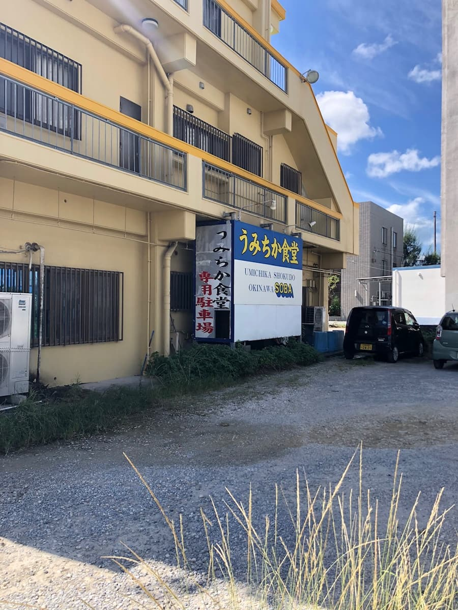
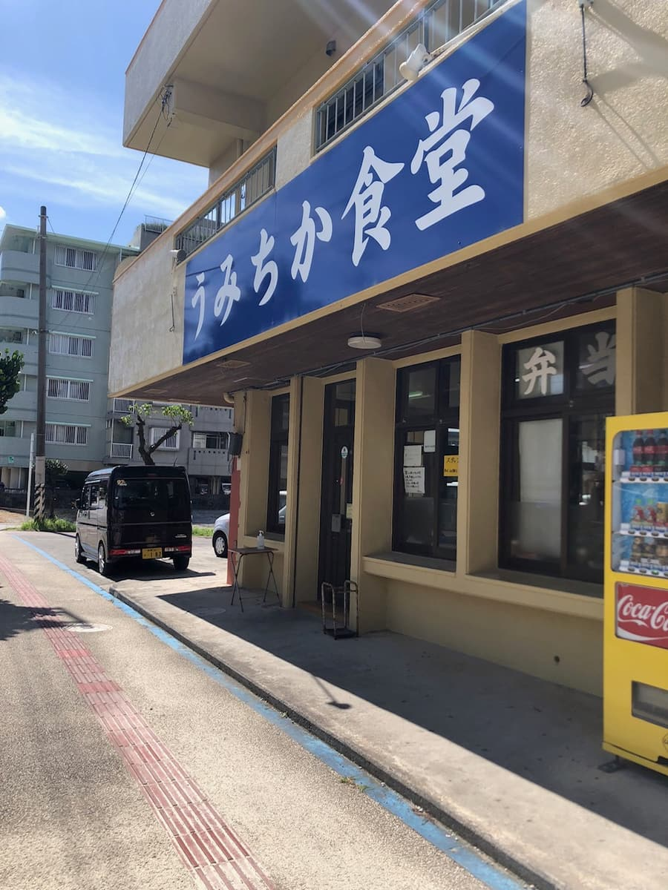
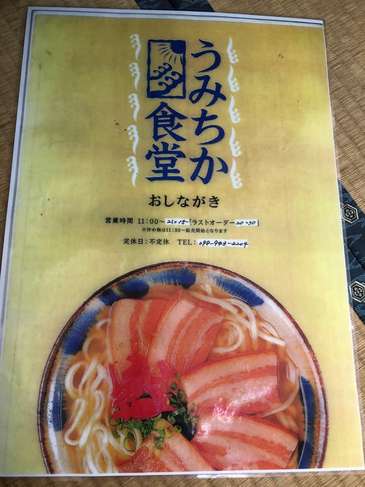
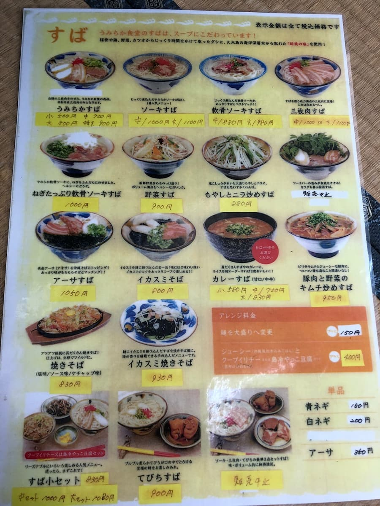
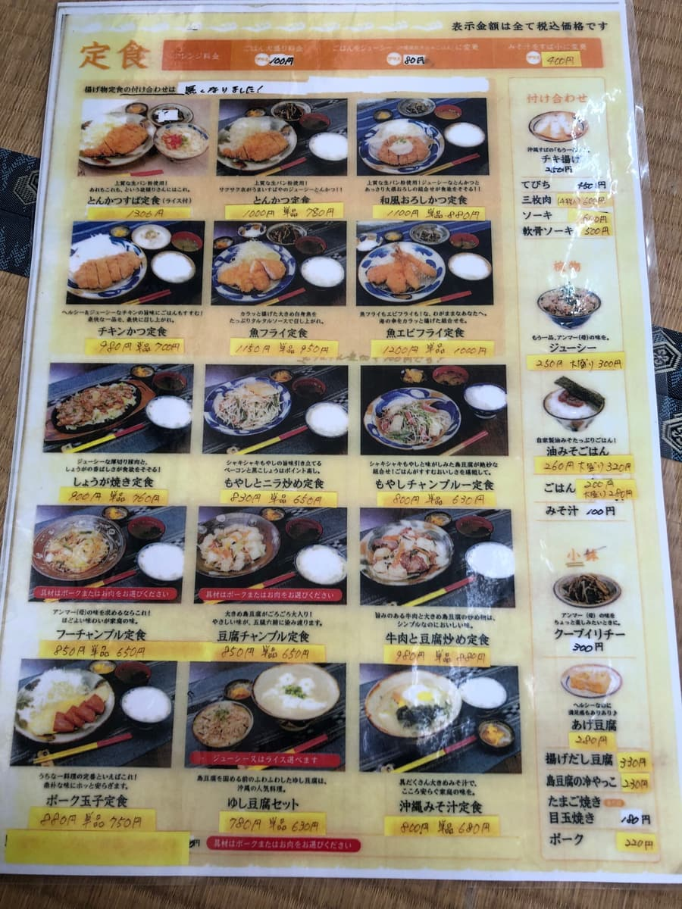
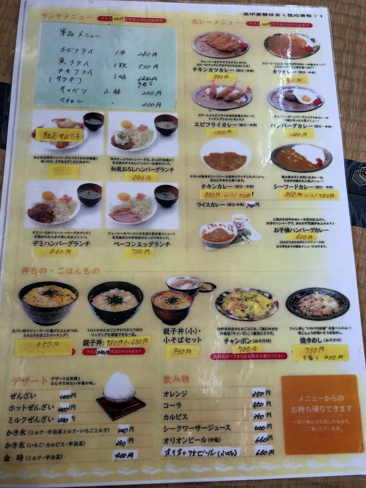
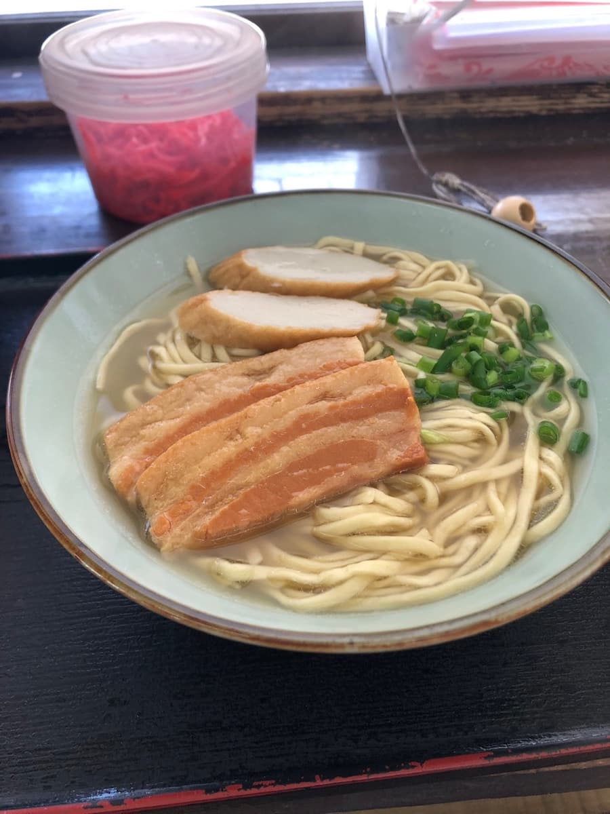
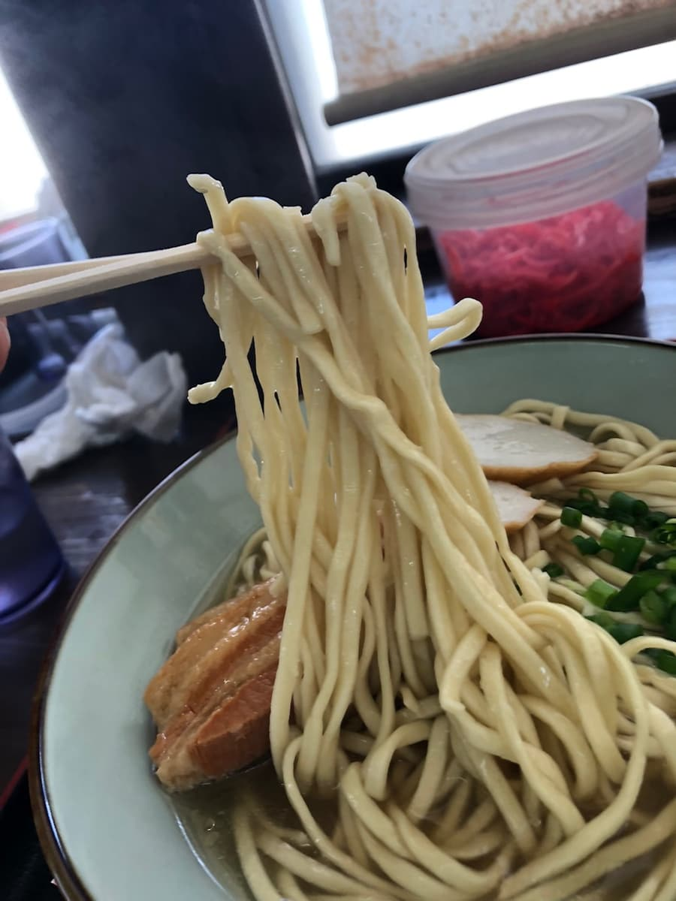

※이 글은 Claude 3.5 Sonnet AI로 작성한 것에 일부 내용을 덧붙였습니다.
2024년 10월에 먹었습니다😄 이번에는 기노완시 마시키에 있는 '우미치카 쇼쿠도'를 소개합니다.

외관은 크림색 건물로, 파란 간판이 표지가 되어 있네요. 가게 안에 들어가니 동네 손님과 관광객으로 북적이고 있었어요😄





메뉴를 보면 기본인 '우미치카 소바'를 비롯해 연골 소키 소바, 산마이니쿠 소바 등의 정번 메뉴부터, 오징어먹물 소바나 숙주부추볶음 소바 등 다른 가게에서는 별로 못 보는 개성적인 메뉴까지 풍부하게 갖춰져 있어요. 가격대는 저렴하게 오키나와 소바를 즐길 수 있네요😆
이번에는 간판 메뉴인 '우미치카 소바(중)'(700엔)를 주문하기로 했어요.

'우미치카 소바'가 나왔어요. 먼저 맑은 국물부터. 순한 맛의 가쓰오 육수 베이스 국물이 잘 우러나 있어요.

면은 가는 편의 스트레이트 타입을 사용. 부드러운 편의 식감이지만, 국물과의 궁합이 최고예요😋
재료인 삼겹살 조림(산마이니쿠)은 푹 조려져서 흐물흐물한 식감. 기름이 적당히 녹아 나와서 맛있지만, 힘줄 같은 질긴 식감이 조금 남아 있는 게 신경 쓰였어요. 어묵(가마보코)은 촉촉한 식감이고, 송송 썬 파의 향이 전체의 포인트가 되어 있어요.
또 사이드 메뉴도 충실해서, 주시(오키나와식 영양밥)나 짬뽕 등 오키나와의 정번 식사도 즐길 수 있어요. 디저트로는 오키나와만의 '젠자이'도 있어서 마무리로 추천해요🍨
평가(9점/15점): 순한 맛의 오키나와 소바로, 국물의 밸런스가 좋아서 무난하게 맛있게 먹을 수 있어요. 가격도 저렴하고 부담 없이 들를 수 있는 가게예요. 기노완시에 오셨을 때 꼭 한번 가 보시는 건 어떨까요? 소박하고 따뜻한 오키나와 소바 가게였어요😊
면: ★★★☆☆（3）
수프: ★★★☆☆（3）
토핑: ★★★☆☆（3）